<!doctype html>
<html lang="de">
<meta charset="utf-8"><meta name="viewport" content="width=device-width,initial-scale=1">
<title>Instandhaltung · Lernwerkstatt</title>
<style>
:root{--ink:#152f34;--green:#075e52;--lime:#dcef90;--paper:#f4f5ef;--line:#d8dfd9}*{box-sizing:border-box}body{margin:0;background:var(--paper);color:var(--ink);font:17px/1.65 system-ui,sans-serif}button,input,textarea,select{font:inherit}button,a,input,textarea,select{touch-action:manipulation}button{cursor:pointer;border:1px solid var(--line);border-radius:8px;background:white;padding:10px 16px;color:var(--ink)}button:hover{border-color:var(--green)}button:focus-visible,a:focus-visible,input:focus-visible,textarea:focus-visible,select:focus-visible{outline:3px solid #d78a18;outline-offset:3px}.primary{background:var(--green);color:white;border-color:var(--green)}header{background:var(--ink);color:white;padding:20px 5%;display:flex;justify-content:space-between;align-items:center;gap:20px}header b{letter-spacing:.04em}header small{color:#d3e2dc}.shell{display:grid;grid-template-columns:270px minmax(0,1fr);max-width:1500px;margin:auto}aside{padding:30px 20px;border-right:1px solid var(--line)}nav{display:grid;gap:8px;position:sticky;top:20px}nav button{text-align:left;background:transparent;border-color:transparent;padding:12px}nav button.active{background:var(--green);color:white}nav small{display:block}main{padding:42px clamp(20px,5vw,76px);min-width:0;max-width:1100px}.eyebrow{font-size:13px;font-weight:750;text-transform:uppercase;letter-spacing:.14em;color:var(--green)}h1{font-size:clamp(32px,4vw,55px);line-height:1.13;letter-spacing:-.04em;margin:15px 0 24px}h2{font-size:26px;line-height:1.3;margin:30px 0 14px}h3{font-size:19px;margin:22px 0 8px}.lead{font-size:20px;color:#426064}.hero{padding:30px;background:var(--ink);color:white;border-radius:12px;margin:25px 0}.hero .eyebrow{color:var(--lime)}.hero h2{margin-top:10px;font-size:29px}.hero p{color:#e4eee8}.strip{display:flex;gap:25px;flex-wrap:wrap;border-block:1px solid var(--line);padding:15px 0;margin:22px 0}.strip strong{display:block;font-size:23px}.box{background:white;border:1px solid var(--line);padding:22px;border-radius:10px;margin:18px 0}.note{background:#e7efdf;border-left:4px solid var(--green);padding:16px 20px;margin:22px 0}.warn{background:#fff2d9;border-left-color:#b36b00}.grid{display:grid;grid-template-columns:1fr 1fr;gap:18px}label{display:block;font-weight:600;margin:14px 0 6px}textarea,input,select{width:100%;padding:10px;border:1px solid #a8bbb2;border-radius:6px;background:white;color:var(--ink)}textarea{min-height:105px;resize:vertical}input[type=radio],input[type=checkbox]{width:auto;margin-right:10px}.option{display:block;font-weight:400;padding:9px 12px;background:var(--paper);border-radius:6px}fieldset{border:0;padding:0;margin:0}legend{font-weight:650;margin-bottom:12px}details{margin:16px 0;border-top:1px solid var(--line);padding-top:12px}summary{cursor:pointer;font-weight:650;color:var(--green)}.feedback{margin-top:12px;white-space:pre-line}.feedback.good{color:#075e52}.feedback.bad{color:#9c3c20}.bottom{display:flex;flex-wrap:wrap;gap:12px;margin:30px 0}.muted{color:#536c68;font-size:14px}progress{width:100%;accent-color:var(--green);height:12px}.steps{padding-left:24px}.steps li{padding:5px 0}table{width:100%;border-collapse:collapse;font-size:15px}td,th{border-bottom:1px solid var(--line);padding:10px;text-align:left}th{background:#e7eee7}.scroll{overflow:auto}.formula{font-size:22px;padding:15px;background:var(--paper);overflow:auto}footer{font-size:13px;margin-top:45px;border-top:1px solid var(--line);padding-top:18px}a{color:var(--green)}.tools{display:flex;flex-wrap:wrap;gap:8px;margin-top:20px}.print-only{display:none}[hidden]{display:none!important}@media(max-width:800px){.shell{grid-template-columns:1fr}aside{border-right:0;padding:15px}nav{display:flex;overflow-x:auto;position:static}nav button{flex:0 0 170px}nav small{display:none}main{padding-top:20px}.grid{grid-template-columns:1fr}header{align-items:flex-start}header small{display:none}}@media print{body{background:white;font-size:11pt}header,aside,.bottom,.tools,.no-print{display:none!important}.shell{display:block}main{padding:0;max-width:none}.print-only{display:block}textarea{border:0;min-height:0}.box{break-inside:avoid}.hero{background:white;color:black}.hero p{color:black}h1{font-size:25pt}button{display:none}}
:root{--ink:#14324f;--green:#15568e;--lime:#bde6ff;--paper:#f1f5fa;--line:#cddae7}
body{font-size:15px;line-height:1.55} header{background:#12395e;padding:12px 5%} .brand{display:flex;align-items:center;gap:14px}.brand img{width:82px;height:52px;object-fit:contain;background:white;border-radius:5px;padding:5px}
.shell{grid-template-columns:235px minmax(0,1fr)}main{padding-top:28px}h1{font-size:clamp(27px,4vw,42px);margin:8px 0 16px}h2{font-size:21px}h3{font-size:17px}.lead{font-size:17px}.hero{padding:22px}.hero h2{font-size:24px}.box{padding:17px}.note{background:#e6f0fb}.warn{background:#fff2d9}.bottom{margin-top:18px}.material{display:inline-block;margin:4px 9px 5px 0}.photos{display:grid;grid-template-columns:repeat(auto-fit,minmax(150px,1fr));gap:12px}.photos figure{margin:0}.photos img{width:100%;height:178px;object-fit:contain;background:#e4edf5;border-radius:6px}.photos figcaption{font-size:13px}.video-frame iframe{width:min(100%,680px);aspect-ratio:16/9;border:0;display:block;margin-top:12px}.section-test{border-top:4px solid #2b6ea7;margin-top:24px}.section-test fieldset{margin:18px 0}.section-test legend{margin-bottom:4px}.section-test .option{margin-top:5px}.quiz-review{padding-left:22px}.quiz-review li{padding:3px 0}.help{margin-top:22px}.help summary{padding:3px 0}.time{display:inline-block;margin-left:6px;color:#355c7d}.map-button{margin-top:16px;width:100%}.test-status{color:#15568e;font-weight:650}.task{padding:12px 15px;background:#e6f0fb;border-radius:6px;margin:12px 0}.task strong{display:block}@media(max-width:800px){.shell{grid-template-columns:1fr}.map-button{width:auto}.photos img{height:145px}}.fraction{display:inline-flex;flex-direction:column;align-items:stretch;vertical-align:middle;text-align:center;line-height:1.18;margin:0 .2em;white-space:nowrap}.fraction span{padding:.15em .25em}.fraction span:first-child{border-bottom:1.5px solid currentColor}.force-figure{margin:14px 0}.force-figure svg{width:100%;max-width:720px;height:auto;display:block}.book-figures{display:flex;flex-wrap:wrap;gap:16px;margin:12px 0 20px}.book-figure{min-width:0;flex:1 1 260px;max-width:465px;margin:0;padding:12px;background:white;border:1px solid var(--line);border-radius:8px}.book-figure img{display:block;width:100%;height:auto;max-height:300px;object-fit:contain}.book-figure figcaption,.force-figure figcaption{margin-top:8px;font-size:14px}.book-figure figcaption span{display:block;font-size:12px;color:#355c7d}.force-task{padding:0 0 16px;border-bottom:1px solid var(--line)}.force-task .grid{max-width:550px}nav{position:static}.map-button{margin-block:16px}.help{padding:16px 19px;border:1px solid #e9b48c;border-radius:10px;background:#fff0e3}.help h2{margin-top:0;color:#78310e}.help details,.hint-orange{padding:10px 12px;margin:10px 0;border:1px solid #e6b48d;border-radius:7px;background:#fff8f0}.help summary,.hint-orange summary{color:#84330d}.help details[open],.hint-orange[open]{background:#ffead6}.help details p{margin-bottom:4px}.force-drawing{display:block;width:100%;height:auto;max-width:670px;border:1px solid #bacde0;border-radius:6px;margin-top:12px}.force-drawing#kraftwegCanvas{touch-action:none;cursor:crosshair;user-select:none}.book-figures .wide-figure{max-width:690px}.book-figures .wide-figure img{max-height:360px}nav button[data-locked="true"] .gate-label::after{content:" · Prüfung erforderlich"}#gateNav{border:1px solid #96b4d0}#reviewFeedback{font-weight:650}.review-bottom{display:flex;gap:12px;flex-wrap:wrap;margin:22px 0}
</style>
<header><div class="brand">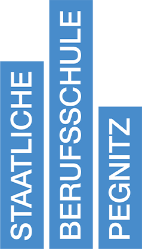<div><b>Lernwerkstatt Instandhaltung</b><br>Staatliche Berufsschule Pegnitz</div></div><small>Industriemechanik · Jahrgang 11</small></header>
<div class="shell"><aside><p class="eyebrow">Dein Lernweg</p><p id="progressText"></p><progress id="progress" max="7" value="0" aria-label="Bearbeitete Lernphasen"></progress><nav id="nav" aria-label="Lernphasen"></nav><button class="map-button" id="printMap">Instandhaltungsmappe öffnen</button><p class="muted">Dein Stand wird auf diesem Gerät gespeichert. Bei geteilten Rechnern nach der Arbeit exportieren und zurücksetzen.</p></aside><main id="main" tabindex="-1"></main></div>
<script>
'use strict';
const KEY='waelzlager-kurs-v1';
let state={page:0,done:[],answers:{},passed:{}};let storageAvailable=true;
try{const raw=localStorage.getItem(KEY);if(raw){const s=JSON.parse(raw);if(s&&Array.isArray(s.done)&&s.answers&&typeof s.answers==='object')state={...state,...s,page:0};}}catch{storageAvailable=false;}
const titles=['Auftrag verstehen','Fehler eingrenzen','Baugruppe untersuchen','Berechnen & auswählen','Instandsetzung planen','Werkstattauftrag','Prüfen & reflektieren'];
const esc=s=>String(s??'').replace(/[&<>"']/g,c=>({'&':'&amp;','<':'&lt;','>':'&gt;','"':'&quot;',"'":'&#39;'}[c]));
function save(){try{localStorage.setItem(KEY,JSON.stringify(state));}catch{storageAvailable=false;}const el=document.getElementById('saveStatus');if(el)el.textContent=storageAvailable?'Lokal gespeichert. Für einen Rechnerwechsel Lernstand exportieren.':'Speicherung nicht verfügbar. Bitte Lernstand vor dem Schließen exportieren.';}
function field(id,title,placeholder='Deine Antwort …'){return `<label for="${id}">${title}</label><textarea id="${id}" data-save="${id}" placeholder="${placeholder}">${esc(state.answers[id])}</textarea>`;}
function quiz(id,question,options,correct,explanation){return `<section class="box"><fieldset><legend>${question}</legend>${options.map((o,i)=>`<label class="option"><input type="radio" name="${id}" value="${i}" ${String(state.answers[id])===String(i)?'checked':''} data-save="${id}">${o}</label>`).join('')}</fieldset><button style="margin-top:14px" data-quiz="${id}" data-correct="${correct}">Antwort prüfen</button><p id="fb-${id}" class="feedback" aria-live="polite">${state.passed[id]?'Bereits richtig beantwortet.':''}</p><template id="ex-${id}">${explanation}</template></section>`;}
const pages=[
()=>`<p class="eyebrow">01 / Informieren · ca. 35 Minuten</p><h1>Störung an der Alzmetall-Bohrmaschine</h1><p class="lead">Du bist heute im Instandhaltungsteam der Schulwerkstatt. Die Werkstattleitung meldet ein mahlendes Geräusch an der neuen Alzmetall-Säulenbohrmaschine.</p><div class="hero"><p class="eyebrow">Der Arbeitsauftrag</p><h2>Störungsmeldung aus der Werkstatt</h2><p>Das Geräusch tritt auch im Leerlauf auf und verändert sich mit der Drehzahl. Die Maschine bleibt bis zur Klärung außer Betrieb. Finde anhand von Beobachtungen und Unterlagen heraus, woher das Geräusch kommen könnte. Halte fest, welche Befunde deine Vermutung stützen und welche Fragen noch offen sind.</p></div><div class="strip"><div><strong>7 Phasen</strong>Ein vollständiger Arbeitsauftrag</div><div><strong>3–10 Minuten</strong>Kurztest pro Kapitel</div><div><strong>1 Mappe</strong>Deine Ergebnisse für die Praxis</div></div><div class="photos"><figure><a href="material/alzmetall-3.jpg" target="_blank" rel="noopener">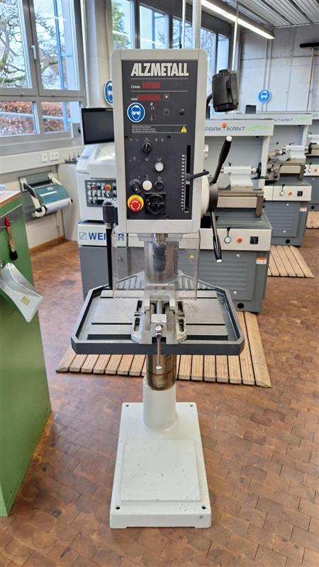</a><figcaption>Alzmetall von vorn</figcaption></figure><figure><a href="material/alzmetall-4.jpg" target="_blank" rel="noopener">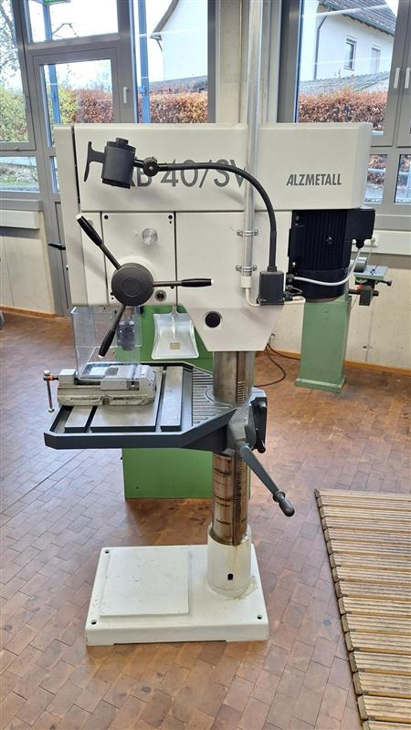</a><figcaption>Alzmetall von der Seite</figcaption></figure><figure><a href="material/alzmetall-5.jpg" target="_blank" rel="noopener">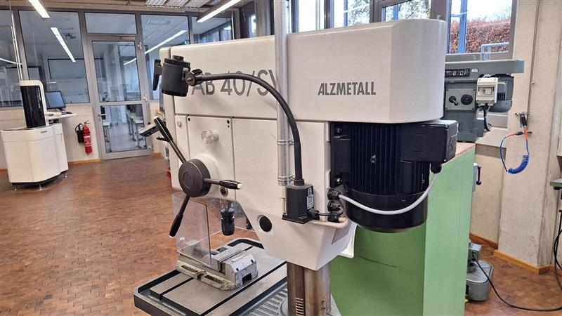</a><figcaption>Alzmetall: Maschinenkopf und Antrieb</figcaption></figure></div><h2>So arbeitest du mit dem Kurs</h2><ol class="steps"><li>Klicke dich nacheinander durch die Kapitel. Lies zuerst den Auftrag und schau dir die Materialien an.</li><li>Schreibe deine Beobachtungen, Rechnungen und Entscheidungen in die Felder. So entsteht deine Projektmappe Stück für Stück.</li><li>Wenn du feststeckst, öffne einen Tipp oder die Schritt-für-Schritt-Hilfe.</li><li>Bearbeite am Ende jedes Kapitels den Kurztest. Prüfe die Rückmeldung und markiere das Kapitel als bearbeitet.</li><li>Unter „Instandhaltungsmappe öffnen“ kannst du deine Ergebnisse ansehen, drucken oder als PDF speichern.</li></ol><p class="note"><strong>Dein erster Schritt:</strong> Beschreibe das Problem in eigenen Worten. Halte anschließend Fragen fest, die du an die Werkstattleitung stellen würdest.</p>${field('auftrag','Formuliere den Auftrag in eigenen Worten.')}${field('infos','Welche Informationen fehlen dir für die Bearbeitung?','Was möchtest du über das Geräusch und seinen Zeitpunkt erfahren?')}<h2>Deine Instandhaltungsmappe</h2><p>Notiere deine Ergebnisse in den folgenden Phasen. Unter „Lernstand“ kannst du sie drucken oder als Datei sichern. Verwende auf gemeinsam genutzten Rechnern möglichst ein Kürzel.</p><label for="alias">Kürzel / Gruppe (freiwillig)</label><input id="alias" data-save="alias" value="${esc(state.answers.alias)}">`,
()=>`<p class="eyebrow">02 / Informieren · ca. 55 Minuten</p><h1>Vom Geräusch zur begründeten Vermutung.</h1><p class="lead">Ein auffälliges Geräusch ist ein Befund. Die Ursache musst du erst eingrenzen.</p><h2>Woher könnte das Geräusch kommen?</h2><p>Sieh dir die Fotos in Kapitel 1 an. Notiere mindestens zwei mögliche Ursachen. Schreib zu jeder auf, welche Beobachtung deine Vermutung stützen oder schwächen würde.</p>${field('ersteVermutung','Deine ersten Vermutungen vor dem Befundvergleich')}<details><summary>Weitere Befunde aus der Werkstatt öffnen</summary><div class="box"><ul><li>Das Geräusch ist auch ohne eingespanntes Werkzeug hörbar.</li><li>In der Nähe des Maschinenkopfs ist es deutlicher zu hören.</li><li>Bei einer fachgerecht abgesicherten Prüfung läuft die Spindel beim Drehen von Hand rau.</li></ul><p>Welche Ursache kommt nach diesen Befunden eher infrage? Welche kannst du noch nicht ausschließen?</p></div></details><details><summary>Fachliche Einordnung nach deiner Vermutung</summary><p>Die Beobachtungen geben Anlass, die Spindellagerung näher zu untersuchen. Sie belegen noch keinen bestimmten Schaden. Auch der Antrieb kommt als Quelle infrage. Begründe, welche Prüfung die Möglichkeiten weiter eingrenzen würde.</p></details>${quiz('diagnose','Welche Aussage ist fachlich begründet?',['Das Geräusch beweist einen Wälzlagerschaden.','Die Befunde sprechen für eine Untersuchung der Lagerung; weitere Prüfungen sind nötig.','Die höchste Drehzahl ist immer die beste Diagnosemethode.'],1,'Geräusch, Laufverhalten und weitere Befunde müssen zusammen bewertet werden. Unkontrollierte Probeläufe sind keine geeignete Diagnose.') }<h2>Schadensbilder als Hinweise</h2><div class="scroll"><table><tr><th>Befund</th><th>Mögliche Zusammenhänge</th></tr><tr><td>Korrosion</td><td>Feuchtigkeit, Lagerung oder Dichtungsprobleme</td></tr><tr><td>Eindrückungen</td><td>Fremdkörper oder unsachgemäße Krafteinleitung</td></tr><tr><td>Ausbrüche an Laufbahnen</td><td>Ermüdung; weitere Betriebsbedingungen prüfen</td></tr><tr><td>Verfärbungen</td><td>Thermische Einwirkung; Ursache weiter untersuchen</td></tr></table></div>${field('diagnoseplan','Dein Diagnoseplan: Prüfung, erwarteter Befund und Bedeutung')}${field('verdacht','Deine Verdachtsdiagnose und mögliche Alternativen')}`,
()=>`<p class="eyebrow">03 / Informieren · ca. 80 Minuten</p><h1>Verstehe die Lagerung.</h1><p class="lead">Bevor du ein Lager auswählst oder ausbaust, klärst du seine Aufgabe im System.</p><h2>Aufbau und Belastung</h2><p>Ein typisches Wälzlager besteht aus Innenring, Außenring, Wälzkörpern und Käfig. Dichtungen oder Deckscheiben können hinzukommen. Radiale Kräfte wirken quer zur Wellenachse, axiale Kräfte entlang der Achse.</p><div class="scroll"><table><tr><th>Lagerart</th><th>Typische Eigenschaften</th></tr><tr><td>Rillenkugellager</td><td>Radiale und begrenzte axiale Belastung in beide Richtungen; genaue Grenzen im Katalog</td></tr><tr><td>Zylinderrollenlager</td><td>Hohe radiale Tragfähigkeit; axiale Führung abhängig von der Bauform</td></tr><tr><td>Schrägkugellager</td><td>Kombinierte Belastung; einreihig meist axiale Lastaufnahme in einer Richtung</td></tr><tr><td>Kegelrollenlager</td><td>Radiale und axiale Belastung; Anordnung und Einstellung beachten</td></tr><tr><td>Pendelrollenlager</td><td>Hohe Tragfähigkeit und Ausgleich begrenzter Winkelfehler</td></tr></table></div><div class="book-figures"><figure class="book-figure"><a href="material/ht-aufbau.png" target="_blank" rel="noopener">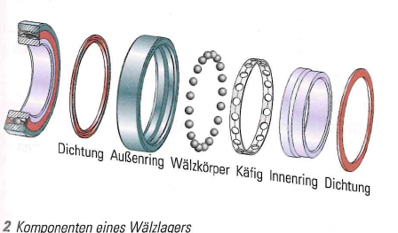</a><figcaption>Verfolge den Aufbau von außen nach innen. <span>Handwerk und Technik, S. 213</span></figcaption></figure><figure class="book-figure"><a href="material/ht-waelzkoerper.png" target="_blank" rel="noopener">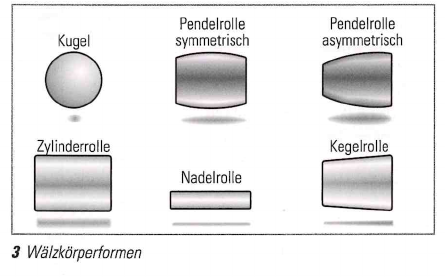</a><figcaption>Vergleiche die Formen der Wälzkörper. <span>Handwerk und Technik, S. 213</span></figcaption></figure></div><h2>Zeichnung lesen</h2><p>Öffne die Alzmetall-Unterlagen. Gib in der Mappe an, welchen Ausschnitt du auswertest. Markiere Welle, Gehäuse, Lagerstellen, Sicherungen, Dichtungen und relevante Maße. Kläre, wie die axiale Führung und die Wärmeausdehnung berücksichtigt werden.</p><div class="box"><h3>Zeichnungen und Buchscan</h3><div class="photos"><figure><a href="material/alzmetall-1.jpg" target="_blank" rel="noopener">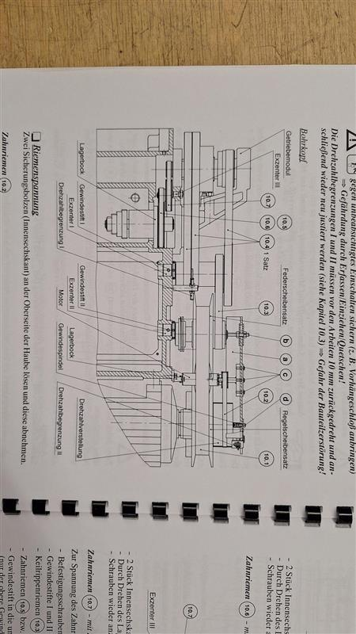</a><figcaption>Alzmetall: Schnittzeichnung</figcaption></figure><figure><a href="material/alzmetall-2.jpg" target="_blank" rel="noopener">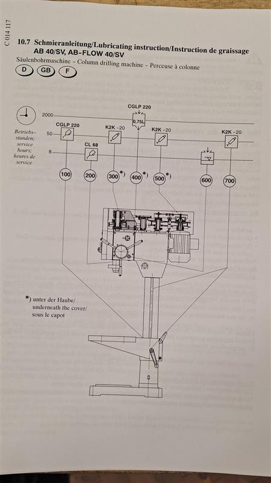</a><figcaption>Alzmetall: Blatt aus der Maschinenunterlage</figcaption></figure></div><p><a class="material" href="material/ht-waelzlager.pdf#page=1" target="_blank" rel="noopener">HT-Verlag · S. 213–215: Aufbau und Darstellung (PDF)</a><a class="material" href="material/ht-waelzlager.pdf#page=3" target="_blank" rel="noopener">HT-Verlag · S. 216–217: Lageranordnung und Umlaufverhältnisse (PDF)</a></p></div><h3>Festlager, Loslager und Betriebsspiel</h3><div class="book-figures"><figure class="book-figure"><a href="material/ht-fest-los.png" target="_blank" rel="noopener">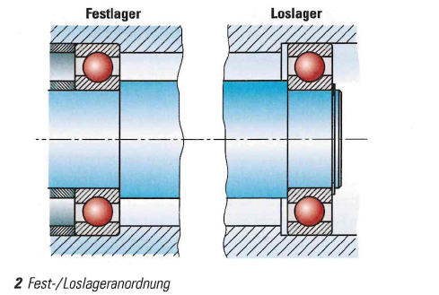</a><figcaption>Suche den axial verschieblichen Lagerring. <span>Handwerk und Technik, S. 215</span></figcaption></figure></div><p>Das Festlager legt die Welle axial fest. Das Loslager ermöglicht einen axialen Längenausgleich, etwa bei Erwärmung. Bei einer angestellten Lagerung können Lager auf Spiel oder Vorspannung eingestellt sein. Die O-Anordnung hat eine größere wirksame Stützbasis als die X-Anordnung bei gleicher Einbaulage und vergleichbaren Lagern. Das Betriebsspiel ist die verbleibende Lagerluft unter Betriebsbedingungen.</p><p>Verteilt sich die Last relativ zum Lagerring über dessen Umfang, hat der Ring Umfangslast. Dafür ist in der Regel ein fester Sitz erforderlich. Bei Punktlast kann eine lose Passung zulässig sein. Maßgeblich ist die Herstellerangabe.</p><div class="book-figures"><figure class="book-figure wide-figure"><a href="material/ht-x-o.png" target="_blank" rel="noopener">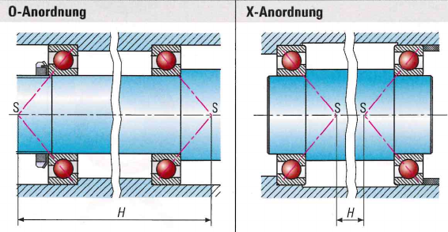</a><figcaption>O-Anordnung und X-Anordnung. Vergleiche, in welche Richtung die Drucklinien laufen und wo sie die Wellenachse schneiden.<span>Handwerk und Technik, S. 215, Abb. 3 (Ausschnitt)</span></figcaption></figure></div><details class="hint-orange"><summary>Hilfestellung: Lagerbezeichnung 6205</summary><p>Bei vielen metrischen Standardlagern entspricht die Bohrungskennzahl ab 04 dem Fünffachen in Millimetern: 05 × 5 = 25 mm. Ausnahmen und Nachsetzzeichen müssen im Herstellerkatalog geprüft werden. Die Bezeichnung allein beschreibt nicht jede Ausführungsanforderung.</p></details>${quiz('richtung','Wie wirkt eine axiale Kraft?',['Quer zur Wellenachse.','Entlang der Wellenachse.','Immer senkrecht zur Gewichtskraft.'],1,'Axial bezieht sich auf die Wellenachse, radial auf die Richtung quer dazu.')}${field('zeichnung','Ergebnis der Zeichnungsanalyse','Lagerstellen, Sicherungen, Maße und offene Fragen …')}${field('lagerart','Welche Lagerart erkennst du? Begründe die Funktion anhand der Unterlagen.')}${drawingExercise()}`,
()=>`<p class="eyebrow">04 / Planen · ca. 145 Minuten</p><h1>Rechnen. Vergleichen. Auswählen.</h1><p class="lead">Zeichne die Kräfte ein, rechne auf Papier oder in deiner Mappe und überprüfe danach die Ergebnisse.</p><div class="note">Rechne mit den angegebenen Übungsdaten für eine vereinfachte Welle.</div><h2>1 · Lagerkräfte Schritt für Schritt</h2><p>Wir betrachten eine Welle mit zwei Lagern A und B. Eine einzelne Radialkraft F wirkt senkrecht zur Welle zwischen den Lagern. Für dieses Modell vernachlässigen wir das Eigengewicht und weitere Lasten.</p><figure class="force-figure"><svg viewBox="0 0 640 238" role="img" aria-label="Freikörperbild: Lager A links, Lager B rechts. Die Last F wirkt 80 Millimeter rechts von A nach unten. Lagerabstand 200 Millimeter. Die Lagerreaktionen F A und F B zeigen nach oben." xmlns="http://www.w3.org/2000/svg"><defs><marker id="kraft-pfeil" viewBox="0 0 10 10" refX="9" refY="5" markerWidth="7" markerHeight="7" orient="auto-start-reverse"><path d="M0 0L10 5L0 10z" fill="context-stroke"/></marker></defs><rect x="4" y="4" width="632" height="230" rx="12" fill="#edf5fc"/><path d="M100 104H540" stroke="#153a5a" stroke-width="11" stroke-linecap="round"/><g fill="#c5d9ee" stroke="#153a5a" stroke-width="2"><path d="M100 109l-17 25h34z"/><path d="M540 109l-17 25h34z"/></g><g stroke-width="4" marker-end="url(#kraft-pfeil)"><path d="M100 91V40M540 91V40" stroke="#15649a"/><path d="M276 40V94" stroke="#a53428"/></g><g font-family="system-ui" font-size="19" font-weight="650" fill="#153a5a"><text x="72" y="32">F<tspan baseline-shift="sub" font-size="12">A</tspan></text><text x="529" y="32">F<tspan baseline-shift="sub" font-size="12">B</tspan></text><text x="289" y="56" fill="#a53428">F = 1.200 N</text><text x="93" y="156">A</text><text x="533" y="156">B</text></g><g stroke="#526f84" fill="none" stroke-width="1.5"><path d="M100 161v55M276 110v76M540 161v55"/><path d="M101 178H275M277 178H539M101 208H539" marker-start="url(#kraft-pfeil)" marker-end="url(#kraft-pfeil)"/></g><g font-family="system-ui" font-size="15" fill="#153a5a" text-anchor="middle"><text x="188" y="173">a = 80 mm</text><text x="408" y="173">b = 120 mm</text><text x="320" y="230">ℓ = 200 mm</text></g></svg><figcaption>Freikörperbild der Welle. Die Kraft F wirkt nach unten. A und B stützen die Welle nach oben ab.</figcaption></figure><div class="box"><ol class="steps"><li><strong>Abstände ablesen.</strong> Von A bis zur Kraft sind es a = 80 mm. Von der Kraft bis B sind es b = 120 mm. Der Lagerabstand ℓ beträgt 200 mm.</li><li><strong>Momente um A bilden.</strong> Denk dir A als Drehpunkt. F dreht im Uhrzeigersinn, F<sub>B</sub> entgegengesetzt. F<sub>A</sub> greift in A an und hat dort keinen Hebelarm. Im Gleichgewicht sind die beiden Momente gleich groß.<div class="formula">F<sub>B</sub> · ℓ = F · a</div></li><li><strong>Nach F<sub>B</sub> auflösen.</strong> Teile beide Seiten durch ℓ. In der Rechnung kürzen sich die Millimeter.<div class="formula">F<sub>B</sub> = <span class="fraction"><span>F · a</span><span>ℓ</span></span> = <span class="fraction"><span>1.200 N · 80 mm</span><span>200 mm</span></span> = 480 N</div></li><li><strong>F<sub>A</sub> mit dem Kräftegleichgewicht bestimmen.</strong> Beide Lagerkräfte zusammen tragen die Last.<div class="formula">F<sub>A</sub> = F − F<sub>B</sub> = 1.200 N − 480 N = 720 N</div></li><li><strong>Ergebnis prüfen.</strong> 720 N + 480 N = 1.200 N. Die Last liegt näher an A, daher ist F<sub>A</sub> größer. Zur Gegenprobe kannst du das Moment um B bilden: F<sub>A</sub> · ℓ = F · b.</li></ol></div><h2>2 · Nominelle Lebensdauer</h2><p class="formula">L<sub>10h</sub> = <span class="fraction"><span>10<sup>6</sup></span><span>60 · n</span></span> · (<span class="fraction"><span>C</span><span>P</span></span>)<sup>p</sup></p><p>C ist die dynamische Tragzahl [kN], P die äquivalente dynamische Lagerbelastung [kN] und n die Drehzahl [min⁻¹]. Für Kugellager gilt p = 3, für Rollenlager p = <span class="fraction"><span>10</span><span>3</span></span>. Die nominelle Lebensdauer gilt für 90 % Zuverlässigkeit unter den Modellannahmen.</p><details class="hint-orange"><summary>Rechenbeispiel für ein Kugellager</summary><p>C = 10 kN, P = 2 kN und n = 1.000 min⁻¹. Der Quotient aus C und P ist 5.</p><div class="formula">L<sub>10h</sub> = <span class="fraction"><span>10<sup>6</sup></span><span>60 · 1.000</span></span> · 5<sup>3</sup> ≈ 2.083 h</div></details><details><summary>Wann ist P gleich der Radialkraft?</summary><p>Prüfe die Angaben für die jeweilige Lagerart im Herstellerkatalog. Bei kombinierter Radial- und Axialbelastung können weitere Faktoren erforderlich sein.</p></details><h2>3 · Auswahl begründen</h2><p>Vergleiche Baugröße, Belastungsrichtung, Tragzahl, erforderliche Lebensdauer, Drehzahlgrenzen, Passung, Lagerluft, Dichtung und Schmierung. Ein passender Bohrungsdurchmesser genügt nicht als Auswahlkriterium.</p><div class="box"><h3>Auswahlaufgabe · vereinfachter Katalogauszug</h3><p>Gefordert: Rillenkugellager mit d × D × B = 25 × 52 × 15 mm, mindestens 4.000 h bei P = 2 kN und n = 1.000 min⁻¹. Beide Luft- und Dichtungsausführungen seien gleich. Die Werte sind Übungsdaten.</p><div class="scroll"><table><tr><th>Kandidat</th><th>Abmessungen [mm]</th><th>C [kN]</th></tr><tr><td>A</td><td>25 × 52 × 15</td><td>12</td></tr><tr><td>B</td><td>25 × 52 × 15</td><td>14</td></tr><tr><td>C</td><td>25 × 62 × 17</td><td>18</td></tr></table></div><p>Weise nach, welcher Kandidat beide Anforderungen erfüllt. Berechne die Lebensdauer von A und B mit der Formel und dokumentiere deine Auswahl.</p></div>${field('rechnung','Dokumentiere deinen Rechenweg mit Einheiten und Annahmen.')}${field('auswahl','Deine Lagerauswahl mit Katalogquelle, Daten und Begründung')}`,
()=>`<p class="eyebrow">05 / Planen & Entscheiden · ca. 80 Minuten</p><h1>Erst der Plan. Dann das Werkzeug.</h1><p class="lead">Du leitest aus Zeichnung, Passungen und Herstellerunterlagen einen passenden Arbeitsablauf ab.</p><h2>Dein Arbeitsplan braucht</h2><ul><li>Identifikation des konkreten Übungsaufbaus und der Lager.</li><li>Demontagefolge mit Sicherungselementen und geeigneten Werkzeugen.</li><li>Kontrolle von Welle, Gehäuse, Lager und Anschlussflächen.</li><li>Montageverfahren, Krafteinleitung und erforderliche Prüfungen.</li><li>Schmierung und Einstellung entsprechend den Unterlagen.</li></ul><div class="note"><strong>Dein Werkstattauftrag:</strong> Die Demontage und Montage übst du in vereinfachter Form am SKF-Demonstrationssatz ESW 8001. Plane für den Aufbau, den dir die Lehrkraft zuweist.<br><a class="material" href="material/demoset-1.pdf" target="_blank" rel="noopener">Demoset I · Zeichnung</a><a class="material" href="material/demoset-2.pdf" target="_blank" rel="noopener">Demoset II · Zeichnung</a><a class="material" href="material/esw-8001.pdf" target="_blank" rel="noopener">SKF-Anleitung</a></div><h2>Schmierung und Montageverfahren</h2><div class="book-figures"><figure class="book-figure"><a href="material/ht-fettschmierung.png" target="_blank" rel="noopener">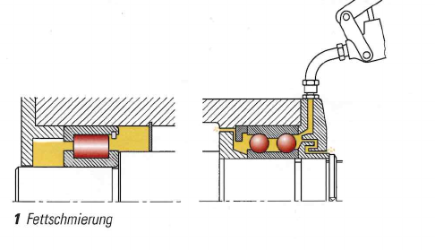</a><figcaption>Verfolge den Weg des Fetts bis zum Lager. <span>Handwerk und Technik, S. 217</span></figcaption></figure><figure class="book-figure"><a href="material/ht-einbau.png" target="_blank" rel="noopener">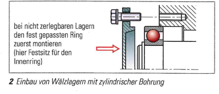</a><figcaption>Verfolge die Montagekraft bis zum Ring mit festem Sitz. <span>Handwerk und Technik, S. 218</span></figcaption></figure></div><p>Der Schmierfilm trennt belastete Kontaktflächen. Schmierstoff schützt außerdem vor Korrosion. Öl kann Wärme abführen, Fett kann zusätzlich abdichtend wirken. Bei Ölbadschmierung ist der Ölstand nach Vorgabe zu prüfen. Bei Tropfölschmierung richtet sich die Zufuhr unter anderem nach Drehzahl und Belastung.</p><p>Mechanische, thermische und hydraulische Verfahren richten sich nach Sitz, Lagerbauart und Ausrüstung. Vor dem Fügen prüfst du Sitzflächen, Sauberkeit und die Lagerbezeichnung.</p><a class="material" href="material/ht-waelzlager.pdf#page=3" target="_blank" rel="noopener">HT-Verlag · S. 217–218: Schmierung (PDF)</a><a class="material" href="material/ht-waelzlager.pdf#page=4" target="_blank" rel="noopener">HT-Verlag · S. 218–221: Montage und Demontage (PDF)</a><section class="box"><h3>SKF-Video: Rillenkugellager</h3><p>Beobachte, an welchem Ring das Werkzeug angreift und wie die Kraft eingeleitet wird. Vergleiche das mit deinem SKF-Aufbau: Im Demoset sind auch Pendelrollenlager und Hülsen eingezeichnet.</p><button id="loadVideo">Video hier laden</button><div id="videoFrame" class="video-frame"></div><p><a href="https://www.youtube.com/watch?v=n9zWjmodm8k" target="_blank" rel="noopener">SKF-Video separat öffnen</a> · <a href="https://www.skf.com/de/products/maintenance-products/mounting-and-dismounting-of-skf-bearings" target="_blank" rel="noopener">SKF-Übersicht</a></p></section><div class="note warn">Keine pauschalen Temperatur-, Drehmoment- oder Schmiermengenvorgaben: Diese hängen von Lagerausführung, Verfahren und Aufbau ab. Verwendet die konkrete Anleitung und die Vorgaben der Lehrkraft.</div>${quiz('kraftfluss','Ein Lager soll mit festem Sitz auf die Welle montiert werden. Wo wird die Montagekraft beim mechanischen Aufschieben eingeleitet?',['Am Außenring, damit alle Teile gleichzeitig bewegt werden.','Am Innenring, der auf die Welle gefügt wird.','Am Käfig.'],1,'Die Montagekraft wird am Ring mit dem festen Sitz eingeleitet. Sie darf dabei nicht über die Wälzkörper übertragen werden. Wenn beide Ringe gleichzeitig gefügt werden, ist eine geeignete Unterstützung beider Ringe erforderlich.')}${field('werkzeuge','Werkzeug- und Hilfsmittelliste mit Begründung')}${field('arbeitsplan','Arbeitsfolge: Schritt → Werkzeug → Prüfpunkt','1. …\n2. …\n3. …')}${field('sicherheit','Gefährdungen, Schutzmaßnahmen und Abbruchkriterien')}${field('freigabeFragen','Offene Fragen für das Freigabegespräch')}<h2>Vorbereitung auf die Werkstatt</h2><p>Besprich deine Diagnose, Auswahl und Arbeitsfolge mit der Lehrkraft. Online-Ergebnisse und Häkchen erteilen keine praktische Arbeitsfreigabe.</p>`,
()=>`<p class="eyebrow">06 / Ausführen · ca. 145 Minuten</p><h1>Deine Planung wird Praxis.</h1><p class="lead">Arbeite am ESW 8001 ausschließlich nach Unterweisung und ausdrücklicher Freigabe durch die Lehrkraft.</p><div class="note warn"><strong>Vor dem Start:</strong> Der konkrete Aufbau, die Herstelleranleitung und die örtliche Unterweisung bestimmen das Vorgehen. Diese Seite ist ein Arbeitsprotokoll und keine vollständige Montageanleitung.</div><div class="box"><h3>Dein SKF-Aufbau</h3><div class="photos"><figure><a href="material/esw-1.jpg" target="_blank" rel="noopener">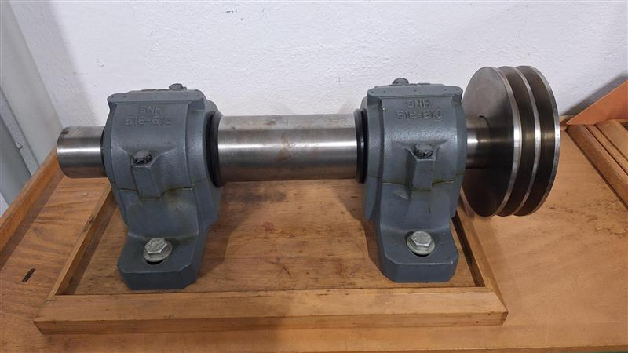</a><figcaption>ESW 8001: Aufbau mit Stehlagergehäusen</figcaption></figure><figure><a href="material/esw-2.jpg" target="_blank" rel="noopener">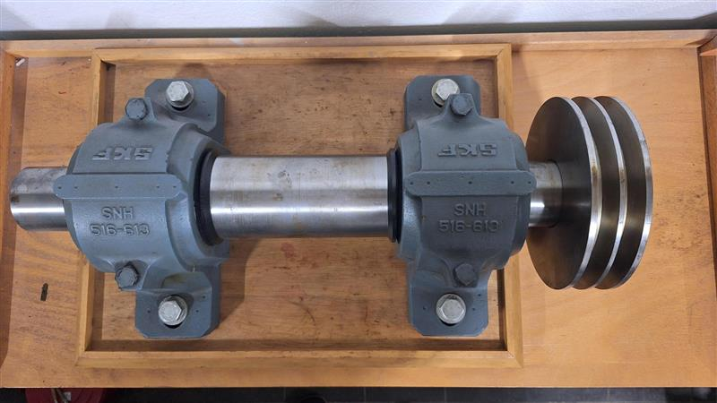</a><figcaption>ESW 8001: Detailansicht des Aufbaus</figcaption></figure><figure><a href="material/esw-3.jpg" target="_blank" rel="noopener">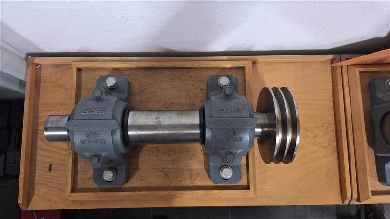</a><figcaption>ESW 8001: Welle und Lagergehäuse</figcaption></figure></div><a class="material" href="material/esw-8001.pdf" target="_blank" rel="noopener">SKF ESW 8001 · Anleitung</a><a class="material" href="material/demoset-1.pdf" target="_blank" rel="noopener">SKF Demoset I · Zeichnung</a><a class="material" href="material/demoset-2.pdf" target="_blank" rel="noopener">SKF Demoset II · Zeichnung</a><p>Demoset I zeigt Pendelrollenlager 22216 CCK auf Abziehhülse AH 316 bzw. Spannhülse H 316. Demoset II zeigt unter anderem 22216 CCK und 22216 CC. Zeige an eurem Aufbau, welches Lager und welcher Einbausitz bearbeitet werden.</p></div><h2>Team und Rollen</h2><p>Eine Person führt aus, eine zweite prüft den Arbeitsplan, eine dritte dokumentiert. Wechselt die Rollen so, dass jede Person praktisch arbeitet.</p>${field('rollen','Wer übernimmt welche Rolle? Wann wechselt ihr?')}<h2>Arbeit dokumentieren</h2><div class="book-figures"><figure class="book-figure"><a href="material/ht-abzieher.png" target="_blank" rel="noopener">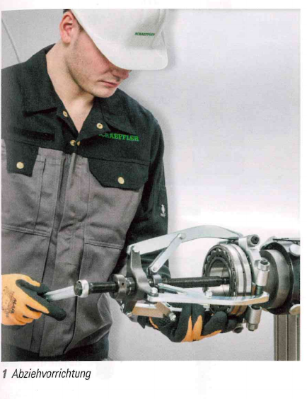</a><figcaption>Beobachte, wo der Abzieher ansetzt. Das passende Werkzeug legt ihr für euren Aufbau fest. <span>Handwerk und Technik, S. 221</span></figcaption></figure></div><ol class="steps"><li>Arbeitsplatz und Aufbau nach Unterweisung vorbereiten.</li><li>Demontage anhand des geprüften Plans durchführen.</li><li>Bauteile zuordnen und Befunde dokumentieren.</li><li>Bei Abweichungen unterbrechen und die Lehrkraft hinzuziehen.</li><li>Montage anhand des geprüften Plans durchführen.</li><li>Prüfung nach Vorgabe vorbereiten.</li></ol>${field('demontage','Demontage: tatsächliche Schritte, Werkzeuge und Beobachtungen')}${field('befunde','Bauteilbefunde: Zustand und mögliche Bedeutung')}${field('montage','Montage: tatsächliche Schritte und Kontrollen')}${field('abweichungen','Abweichungen vom Plan und Rücksprache mit der Lehrkraft')}`,
()=>`<p class="eyebrow">07 / Kontrollieren & Bewerten · ca. 55 Minuten</p><h1>Wann ist der Auftrag erfüllt?</h1><p class="lead">Ein eingebautes Lager ist noch kein geprüfter Arbeitsauftrag. Halte fest, was du kontrolliert hast und mit welchem Ergebnis.</p><h2>Prüfprotokoll</h2><p>Die Lehrkraft legt die passenden Kriterien, Verfahren und zulässigen Werte für euren Aufbau fest. Dokumentiere Soll, Ist, Prüfmittel und Entscheidung. Ein Laufversuch erfolgt nur nach Freigabe und gemäß Unterweisung.</p>${field('pruefung','Prüfpunkte und Ergebnisse','Prüfpunkt | Soll / Quelle | Ist | Prüfmittel | Bewertung\n…')}${field('nacharbeit','Welche Abweichungen oder Nacharbeiten sind offen?')}<section class="box"><h2>Reflexion in Kleingruppen · 15 Minuten</h2><ol class="steps"><li><strong>3 Minuten:</strong> Notiert einzeln einen gelungenen Schritt und eine Stelle, an der ihr unsicher wart.</li><li><strong>8 Minuten:</strong> Tauscht euch zu dritt oder zu viert aus. Vergleicht, wie ihr die Störung eingegrenzt habt und wo euch Zeichnung, Rechnung oder Arbeitsplan in der Werkstatt geholfen haben. Belegt eure Aussagen mit einem Beispiel.</li><li><strong>4 Minuten:</strong> Haltet einen gemeinsamen Lerngewinn und eine konkrete Verbesserung fest. Wenn ihr euch in einem Punkt uneinig seid, notiert beide Sichtweisen.</li></ol>${field('reflexionGruppe','Gruppenkürzel und Stichpunkte aus dem Austausch')}${field('reflexion','Gemeinsames Fazit: Das behalten wir bei. Das ändern wir beim nächsten Auftrag.')}${field('reflexionTransfer','Dein persönlicher Beitrag und eine Erkenntnis aus der Gruppe')}</section>${field('uebergabe','Übergabe an den Auftraggeber','Ergebnis, durchgeführte Arbeiten, Prüfbefunde und offene Punkte …')}<div class="note">Die Markierung „bearbeitet“ dokumentiert deine Selbsteinschätzung. Fachliche Bewertung und Werkstattfreigabe liegen bei der Lehrkraft.</div><h2>Fachliche Quellen und Unterrichtsmaterial</h2><ul><li>Verlag Handwerk und Technik: Kapitel „Wälzlager“, S. 213–222.</li><li><a href="https://cdn.skfmediahub.skf.com/api/public/0901d196802809de/pdf_preview_medium/0901d196802809de_pdf_preview_medium.pdf" target="_blank" rel="noopener">SKF: Bearing size – nominelle Lebensdauer</a></li><li>Projektmaterial: Alzmetall-Fotos und Maschinenunterlagen, SKF ESW 8001 und Demoset-Zeichnungen.</li></ul><p><a class="material" href="material/ht-waelzlager.pdf#page=6" target="_blank" rel="noopener">HT-Verlag · S. 222: Übungen und Entsorgung (PDF)</a></p>`];

const support = [
  ['Notiere zuerst nur, was gemeldet wurde.', 'Nutze drei Spalten: Beobachtung · Vermutung · fehlende Angabe.', 'Vergleiche Front- und Seitenfoto. Markiere Bereiche für eine spätere Prüfung. Formuliere zwei Rückfragen an die Werkstattleitung.'],
  ['Trenne Geräuschquelle und Ursache. Ein Geräusch kann sich über das Gehäuse übertragen.', 'Beginne mit drei Möglichkeiten: Werkzeug, Antrieb, Lagerung. Ordne jedem Verdacht einen Befund zu, der ihn stützen oder schwächen würde.', 'Erstelle eine Rangfolge der Verdachtsursachen und nenne einen Befund, der deine erste Vermutung widerlegen würde.'],
  ['Lies zuerst S. 213. Suche Innenring, Außenring, Wälzkörper und Käfig in der Abbildung.', 'Verfolge im Schnitt die Welle von links nach rechts. Suche Bauteile, die ein Lager axial festhalten.', 'Vergleiche die Fest-/Loslagerung mit der O-Anordnung. Skizziere den Unterschied beim Längenausgleich.'],
  ['Skizziere A und B und trage F, a und l ein. Bestimme zuerst das Moment um A.', 'Beginne mit dem Moment um A. Verwende immer den Abstand zum Drehpunkt. Kontrolliere danach die Summe der Kräfte und die Einheiten.', 'Bestimme die erforderliche dynamische Tragzahl für 4.000 h durch Umstellen der Lebensdauerformel. Alternativ: Rechne die Durchmesserzunahme eines 60-mm-Rings für ΔT = 40 K und α = 0,000012/K (vgl. Buch S. 220).'],
  ['Öffne den Buchscan auf S. 218. Markiere die Arbeitsschritte vor dem Einbau.', 'Schreibe zu jedem Schritt: Bauteil → Werkzeug → Krafteinleitung → Prüfung. Vergleiche mit der Zeichnung, nicht nur mit dem Video.', 'Vergleiche mechanische und thermische Montage anhand von Sitz, Werkzeug und Prüfaufwand. Begründe die Auswahl für einen gegebenen Aufbau mit der Lehrkraft.'],
  ['Markiere in der Demoset-Zeichnung zuerst Lager, Sicherung und Hülse.', 'Nutze den Arbeitsplan. Die prüfende Person liest vor jedem Wechsel den nächsten Prüfschritt vor und hakt ihn nach Kontrolle ab.', 'Vergleiche nach der Übung die beiden Zeichnungen. Zeige jeweils einen Unterschied im Aufbau, der die Werkzeugwahl ändern kann.'],
  ['Schreibe zu jedem Prüfpunkt auf, was gefordert war und was du beobachtet oder gemessen hast.', 'Formuliere deine Entscheidung mit: „Der Prüfpunkt ist erfüllt / offen, weil …“ und nenne die Quelle des Sollwerts.', 'Ein Lager läuft nach der Montage rau. Formuliere zwei Ursachen und nenne für jede eine Prüfung, die sie voneinander unterscheidet.']
];
const chapterTests = [
  [
    ['Was hältst du aus der Störungsmeldung als Befund fest?', ['Das Geräusch tritt nur beim Bohren auf.', 'Das Geräusch tritt auch im Leerlauf auf.', 'Das Geräusch ist unabhängig von der Drehzahl.'], 1, 'Die Meldung dokumentiert das Geräusch im Leerlauf und seine Abhängigkeit von der Drehzahl.'],
    ['Was gibst du am Ende ab?', ['Die Instandhaltungsmappe mit Diagnose, Planung und Prüfergebnis.', 'Nur die Fotos der Maschine.', 'Nur das Ergebnis der Lebensdauerrechnung.'], 0, 'Die Mappe dokumentiert den vollständigen Auftrag.'],
    ['Was machst du, wenn dir für die Diagnose eine Information fehlt?', ['Ich lege die Ursache ohne Rückfrage fest.', 'Ich überspringe den Auftrag.', 'Ich notiere eine gezielte Frage in der Projektmappe.'], 2, 'Eine konkrete Frage hilft dir, die fehlende Information zu beschaffen.']
  ],
  [
    ['Welcher Befund stützt die Untersuchung der Lagerung zusätzlich?', ['Eine raue Spindellagerung bei einer abgesicherten Prüfung.', 'Die Farbe des Gehäuses.', 'Die Aufschrift auf dem Bohrtisch.'], 0, 'Rauer Lauf stützt den Verdacht, beweist aber keine bestimmte Schadensursache.'],
    ['Warum ist Schmutz im Wälzlager kritisch? (vgl. HT-Übung 16)', ['Er vergrößert immer die Drehzahl.', 'Er kann in die Laufbahn eingewalzt werden und Verschleiß fördern.', 'Er verbessert die Schmierung.'], 1, 'Verunreinigungen können Eindrückungen und Folgeschäden verursachen.'],
    ['Welche Eigenschaft ist ein typischer Vorteil von Wälzlagern? (vgl. HT-Übung 5)', ['Sie sind unempfindlich gegen Stöße.', 'Sie laufen grundsätzlich geräuschlos.', 'Sie haben häufig eine geringe Anlaufreibung.'], 2, 'Beim Anlaufen wirken bei Wälzlagern meist geringe Reibkräfte.']
  ],
  [
    ['Welche Teile gehören typischerweise zum Wälzlager? (vgl. HT-Übung 1)', ['Nur Welle und Gehäuse.', 'Innenring, Außenring, Wälzkörper und Käfig.', 'Gehäusedeckel, Keilriemen und Spindel.'], 1, 'Die Wälzkörper laufen zwischen den Ringen und werden meist durch den Käfig geführt.'],
    ['Wonach unterscheidet man Kugel- und Rollenlager? (vgl. HT-Übungen 2–3)', ['Nach der Form der Wälzkörper.', 'Nach der Anzahl der Schrauben.', 'Nach der Gehäusefarbe.'], 0, 'Kugeln und Rollen sind unterschiedliche Wälzkörperformen.'],
    ['Was ermöglicht das Loslager? (vgl. HT-Übung 11)', ['Die axiale Festlegung an beiden Lagerstellen.', 'Eine feste Drehzahl.', 'Den axialen Längenausgleich.'], 2, 'Das Loslager lässt die dafür erforderliche axiale Verschiebung zu.']
  ],
  [
    ['F = 1200 N, l = 200 mm, a = 80 mm von A. Wie groß ist F_B?', ['720 N', '480 N', '1500 N'], 1, 'Momentengleichgewicht um A: F_B = 1200 · 80 / 200 = 480 N.'],
    ['Welcher Kandidat erfüllt Größe und Mindestlebensdauer der Auswahlaufgabe?', ['A', 'C', 'B'], 2, 'A erreicht 3.600 h. B passt und erreicht rund 5.717 h. C passt geometrisch nicht.'],
    ['Welche Bohrung ergibt bei einem Standardlager 6205 die Kennzahl 05? (vgl. HT-Übung 4)', ['25 mm', '5 mm', '50 mm'], 0, 'Bei dieser Kennzahl gilt 05 × 5 mm = 25 mm.']
  ],
  [
    ['Welche Aufgabe hat der Schmierfilm? (vgl. HT-Übung 8)', ['Er ersetzt alle Dichtungen.', 'Er trennt die sich relativ bewegenden Kontaktflächen.', 'Er erhöht die Montagekraft.'], 1, 'Ein tragfähiger Schmierfilm vermindert direkte Berührung und Verschleiß.'],
    ['Wo leitest du beim Fügen auf einen festen Wellensitz die Montagekraft ein? (vgl. HT-Übung 13)', ['Am Käfig.', 'Am Außenring über die Kugeln.', 'Am Innenring.'], 2, 'Der Ring mit festem Sitz nimmt die Montagekraft direkt auf.'],
    ['Welches Verfahren ist thermisch? (vgl. HT-Übungen 14 und 18)', ['Kontrolliertes Erwärmen mit einem geeigneten Induktionsgerät.', 'Mechanisches Pressen bei Raumtemperatur.', 'Einpressen mit einer hydraulischen Presse ohne Erwärmung.'], 0, 'Erwärmung vergrößert vorübergehend die Bohrung. Vorgaben des Herstellers beachten.']
  ],
  [
    ['Was kann beim Lösen einer Lagerverbindung mit kegeligem Sitz passieren? (vgl. HT-Übung 17)', ['Der Pressverband kann sich plötzlich lösen.', 'Die Welle kann sich nie axial bewegen.', 'Die Verbindung löst sich stets gleichmäßig.'], 0, 'Die axiale Bewegung muss entsprechend der Anleitung begrenzt werden.'],
    ['Welches Lager nennt Demoset I?', ['6205', '22216 CCK', 'NU 215'], 1, 'Die Zeichnung 1037021 bezeichnet an beiden gezeichneten Lagerstellen 22216 CCK.'],
    ['Was tust du, wenn Werkzeug oder Aufbau vom freigegebenen Plan abweichen?', ['Mit mehr Kraft fortfahren.', 'Die Schritte aus dem Video übernehmen.', 'Anhalten und mit der Lehrkraft klären.'], 2, 'Bei einer Abweichung wird der praktische Arbeitsplan überprüft.']
  ],
  [
    ['Was ist das Betriebsspiel eines Lagers? (vgl. HT-Übung 6)', ['Die Lagerluft unter Betriebsbedingungen.', 'Die Drehzahl im Leerlauf.', 'Der axiale Abstand zwischen zwei Gehäusen.'], 0, 'Passung und Temperatur können die Lagerluft im Betrieb beeinflussen.'],
    ['Was gehört zu einem überprüfbaren Protokoll?', ['Nur „alles in Ordnung“.', 'Nur die Lagernummer.', 'Sollwert und Quelle, Istwert oder Befund, Prüfmittel und Bewertung.'], 2, 'So kann die Lehrkraft die Entscheidung nachvollziehen.'],
    ['Wie gehst du mit einem ausgebauten, ausgesonderten Lager um? (vgl. HT S. 222)', ['Alles kommt in denselben Behälter.', 'Schmierstoffe und Teile nach Werkstattvorgabe trennen und entsorgen.', 'Mit frischem Fett neu verpacken und ohne Prüfung wieder einbauen.'], 1, 'Schmierstoffe und unterschiedliche Materialien werden nach den geltenden Werkstattvorgaben behandelt.']
  ]
];

const answerKey = (page, question) => (page===0?'auftrag-v2':'kapitel-' + page) + '-frage-' + question;
function validTests(raw) {
  const result = {};
  for (let page = 0; page < chapterTests.length; page++) {
    const entry = raw?.[page];
    if(page===3){
      if(Array.isArray(entry?.forces)&&entry.forces.length===4&&entry.forces.every(v=>Number.isFinite(v)&&v>=0)) result[page]={forces:entry.forces};
      continue;
    }
    if (page===0&&entry?.revision!==2) continue;
    if (!Array.isArray(entry?.choices) || entry.choices.length !== chapterTests[page].length) continue;
    if (!entry.choices.every((choice, i) => Number.isInteger(choice) && choice >= 0 && choice < chapterTests[page][i][1].length)) continue;
    result[page] = {choices:entry.choices,revision:entry.revision};
  }
  return result;
}
function scoreTest(page, entry) {
  if(page===3) return forceProblems.filter((task,i)=>[0,1].every(j=>Math.abs(entry.forces[i*2+j]-task.solution[j])<=1)).length;
  return entry.choices.filter((choice, i) => choice === chapterTests[page][i][2]).length;
}
function testSummary(page) {
  const entry = state.tests?.[page];
  if (!entry) return 'Noch nicht ausgewertet.';
  if(page===3) return forceReview(entry);
  const questions = chapterTests[page];
  return '<strong>' + scoreTest(page, entry) + ' von ' + questions.length + ' Punkten</strong><ol class="quiz-review">' +
    questions.map(([question, options, correct, explanation], i) => {
      const choice = entry.choices[i];
      return '<li><b>' + (choice === correct ? 'Richtig' : 'Zu wiederholen') + '</b> · ' +
        esc(question) + '<br>Deine Antwort: ' + esc(options[choice]) + '<br>' + esc(explanation) + '</li>';
    }).join('') + '</ol>';
}
function learningTools(page) {
  const [hint, scaffold, extension] = support[page];
  const helper = '<section class="help"><h2>Hilfe und Vertiefung</h2><details><summary>Tipp anzeigen</summary><p>' +
    hint + '</p></details><details><summary>Schritt für Schritt</summary><p>' + scaffold +
    '</p></details><details><summary>Zusatzaufgabe · ca. 10 Minuten</summary><p>' + extension + '</p>' +
    field('vertiefung-' + page, 'Dein Ergebnis zur Zusatzaufgabe') + '</details></section>';
  if(page===3) return helper + forceTest();
  const questions = chapterTests[page].map(([question, options], i) => {
    const key = answerKey(page, i);
    return '<fieldset><legend>' + (i+1) + '. ' + question + '</legend>' + options.map((text, j) =>
      '<label class="option"><input type="radio" data-chapter-answer name="' + key + '" value="' + j + '"' +
      (state.answers[key] === String(j) ? ' checked' : '') + '>' + text + '</label>').join('') + '</fieldset>';
  }).join('');
  return helper + '<section class="box section-test"><h2>Kurztest <small class="time">3–5 Minuten</small></h2>' +
    '<p>Wähle pro Frage eine Antwort. Deine letzte Auswertung erscheint in der Instandhaltungsmappe.</p>' +
    questions + '<button class="primary" id="gradeChapter">Kurztest auswerten</button>' +
    '<div id="chapterResult" class="feedback" aria-live="polite">' + testSummary(page) + '</div></section>';
}
function gradeChapter() {
  const page = state.page;
  if(page===3){gradeForces();return;}
  const choices = chapterTests[page].map((_, i) => Number(state.answers[answerKey(page, i)]));
  const result = document.getElementById('chapterResult');
  if (choices.some(choice => !Number.isInteger(choice))) {
    result.textContent = 'Beantworte zuerst alle drei Fragen.';
    return;
  }
  state.tests ??= {};
  if(page<5&&releaseActive()&&JSON.stringify(state.tests[page]?.choices)!==JSON.stringify(choices))state.release=null;
  state.tests[page] = {choices,revision:2};
  updateReviewBadge();
  result.innerHTML = testSummary(page);
  save();
}
function testMap() {
  const results = titles.map((title, page) => {
    const entry = state.tests?.[page];
    return '<li>' + esc(title) + ' – ' + (entry ? scoreTest(page, entry) + ' / ' + (page===3?forceProblems.length:chapterTests[page].length) + ' Punkte' : 'offen') + '</li>';
  }).join('');
  const extensions = titles.map((title, page) => {
    const answer = state.answers['vertiefung-' + page];
    return answer ? '<section><h2>Vertiefung · ' + esc(title) + '</h2><p>' + esc(answer) + '</p></section>' : '';
  }).join('');
  return '<ol>' + results + '</ol>' + extensions;
}

const forceProblems = [
  {heading:'Aufgabe 1 · Last näher an A', text:'Die Lager A und B sind 300 mm voneinander entfernt. Eine Radialkraft von 900 N greift 100 mm rechts von A an. Bestimme die Kräfte an A und B.', solution:[600,300], feedback:'Moment um A: F_B · 300 mm = 900 N · 100 mm. Daraus folgt F_B = 300 N. Die Differenz zur Gesamtlast ergibt F_A = 600 N.'},
  {heading:'Aufgabe 2 · Abstand von B gegeben', text:'Der Lagerabstand beträgt 500 mm. Eine Radialkraft von 1,5 kN greift 125 mm links von B an. Bestimme beide Lagerkräfte und gib sie in N an.', solution:[375,1125], feedback:'1,5 kN sind 1.500 N. Moment um B: F_A · 500 mm = 1.500 N · 125 mm. Daraus folgt F_A = 375 N und F_B = 1.125 N.'}
];
function forceTest(){
  const tasks = forceProblems.map((task,i)=>'<section class="force-task"><h3>'+task.heading+'</h3><p>'+task.text+'</p><div class="grid">'+
    ['A','B'].map(side=>{
      const id='kraft-'+i+'-'+side;
      return '<div><label for="'+id+'">Aufgabe '+(i+1)+' · F<sub>'+side+'</sub> [N]</label><input id="'+id+'" type="text" inputmode="decimal" data-save="'+id+'" value="'+esc(state.answers[id])+'"></div>';
    }).join('')+'</div></section>').join('');
  return '<section class="box section-test"><h2>Kurztest <small class="time">10 Minuten</small></h2><p>Skizziere zuerst beide Lastfälle und halte deinen Rechenweg fest. Gib die Ergebnisse in Newton ohne Tausendertrennzeichen ein. Pro vollständig richtiger Aufgabe erhältst du einen Punkt.</p>'+tasks+field('kraftRechenweg','Rechenweg zu beiden Übungsaufgaben')+'<button class="primary" id="gradeChapter">Kurztest auswerten</button><div id="chapterResult" class="feedback" aria-live="polite">'+testSummary(3)+'</div></section>';
}
function gradeForces(){
  const inputs=forceProblems.flatMap((_,i)=>['A','B'].map(side=>(state.answers['kraft-'+i+'-'+side]??'').trim()));
  const result=document.getElementById('chapterResult');
  if(inputs.some(v=>!/^\d+(?:[.,]\d+)?$/.test(v)||!Number.isFinite(Number(v.replace(',','.'))))){
    result.textContent='Gib für beide Aufgaben jeweils F_A und F_B als Zahl in N ein. Verwende keine Tausendertrennzeichen.';
    return;
  }
  state.tests ??= {};
  const forces=inputs.map(v=>Number(v.replace(',','.')));
  if(releaseActive()&&JSON.stringify(state.tests[3]?.forces)!==JSON.stringify(forces))state.release=null;
  state.tests[3]={forces};
  updateReviewBadge();
  result.innerHTML=forceReview(state.tests[3]);
  save();
}
function forceReview(entry){
  const score=scoreTest(3,entry);
  return '<strong>'+score+' von 2 Punkten</strong><ol class="quiz-review">'+forceProblems.map((task,i)=>{
    const [a,b]=entry.forces.slice(i*2,i*2+2);
    const correct=Math.abs(a-task.solution[0])<=1&&Math.abs(b-task.solution[1])<=1;
    return '<li><b>'+(correct?'Richtig':'Zu wiederholen')+'</b> · Deine Werte: F<sub>A</sub> = '+fmt(a)+' N, F<sub>B</sub> = '+fmt(b)+' N.<br>'+task.feedback+'</li>';
  }).join('')+'</ol>';
}
function revealedPage(){
  return Math.max(state.page===7?4:state.page,...state.done,...Object.keys(state.tests??{}).map(Number));
}
function visibleMapFields(){
  const sections=[
    'alias auftrag infos','ersteVermutung diagnoseplan verdacht','zeichnung lagerart kraftwegText','rechnung auswahl kraftRechenweg',
    'werkzeuge arbeitsplan sicherheit freigabeFragen','rollen demontage befunde montage abweichungen','pruefung nacharbeit reflexionGruppe reflexion reflexionTransfer uebergabe'
  ];
  return new Set(sections.slice(0,revealedPage()+1).join(' ').split(' '));
}


state.tests = validTests(state.tests);

const rubric = [
  ['checkDiagnose','Diagnose','Beobachtungen und Vermutungen getrennt, Ursache mit Befunden eingegrenzt.'],
  ['checkKraft','Zeichnung und Kraftfluss','Lagerstellen zugeordnet und Kraftweg in der Skizze oder schriftlich nachvollziehbar erklärt.'],
  ['checkRechnung','Rechnung und Lagerauswahl','Lagerkräfte mit Einheiten, Rechenweg und begründete Lagerauswahl nachvollziehbar.'],
  ['checkPlan','Arbeitsplan und Sicherheit','Arbeitsfolge, Werkzeugwahl, Prüfpunkte und Schutzmaßnahmen passen zum zugewiesenen Aufbau.']
];
const rubricLabels=['Offen / überarbeiten','Teilweise nachvollziehbar','Erfüllt'];
function preparationTests(){
  return Array.from({length:5},(_,i)=>{
    const entry=state.tests?.[i];
    return {title:titles[i],max:i===3?2:3,score:entry?scoreTest(i,entry):null};
  });
}
function reviewSummary(){
  const tests=preparationTests(), total=tests.reduce((sum,row)=>sum+(row.score??0),0);
  const done=tests.filter(row=>row.score!==null).length;
  return {total,done, rubricPoints:rubric.reduce((sum,[key])=>sum+Number(state.answers[key]||0),0)};
}
function releaseActive(){return state.release?.status==='freigegeben';}
function verifyRelease(raw){
  return raw&&['freigegeben','zurückgestellt'].includes(raw.status)&&typeof raw.date==='string'&&typeof raw.teacher==='string'
    ? {status:raw.status,date:raw.date,teacher:raw.teacher}:null;
}
function statusText(){
  if(!state.release)return 'Prüfung offen';
  return state.release.status==='freigegeben'?'Freigegeben':'Zur Überarbeitung zurückgegeben';
}
function teacherTable(){
  return '<div class="scroll"><table><thead><tr><th>Kapitel</th><th>Letzter Kurztest</th></tr></thead><tbody>'+
    preparationTests().map((row,i)=>'<tr><td>'+String(i+1).padStart(2,'0')+' · '+esc(row.title)+'</td><td>'+
      (row.score===null?'Offen':row.score+' / '+row.max+' Punkte')+'</td></tr>').join('')+'</tbody></table></div>';
}
function reviewPage(){
  const {total,done,rubricPoints}=reviewSummary();
  return '<p class="eyebrow">Nach Kapitel 05 · mit Lehrkraft</p><h1>Instandhaltungsmappe prüfen</h1><p>Öffne deine Mappe und zeige der Lehrkraft deine Diagnose, Zeichnung, Berechnungen und den Arbeitsplan. Die Lehrkraft bespricht offene Punkte mit dir und entscheidet über den Werkstattstart.</p>'+
    '<div class="strip"><div><strong>'+total+' / 14</strong>Testpunkte</div><div><strong>'+done+' / 5</strong>Kurztests ausgewertet</div><div><strong id="rubricScore">'+rubricPoints+' / 8</strong>Mappenpunkte</div><div><strong>'+statusText()+'</strong>Werkstattstatus</div></div>'+
    teacherTable()+'<p>Richtwert für das Gespräch: 10 von 14 Testpunkten. Nutzt offene Aufgaben und Fehler, um festzulegen, was vor der Praxis noch geübt werden muss.</p>'+
    '<button class="primary" id="openReviewMap">Mappe mit Ergebnissen öffnen</button><section class="box"><h2>Bewertung durch die Lehrkraft</h2><p>0 = offen · 1 = teilweise nachvollziehbar · 2 = erfüllt. Für die Freigabe müssen die fünf Kurztests ausgewertet sein, alle Kriterien mindestens 1 Punkt und der Arbeitsplan einschließlich Sicherheit 2 Punkte erhalten. Die praktische Unterweisung erfolgt vor der Freigabe.</p>'+
    rubric.map(([key,label,desc])=>'<label for="'+key+'">'+label+'</label><p class="muted">'+desc+'</p><select id="'+key+'" data-save="'+key+'">'+rubricLabels.map((text,i)=>'<option value="'+i+'"'+(Number(state.answers[key]||0)===i?' selected':'')+'>'+i+' · '+text+'</option>').join('')+'</select>').join('')+
    '<label for="teacherName">Kürzel der Lehrkraft</label><input id="teacherName" data-save="teacherName" value="'+esc(state.answers.teacherName)+'">'+
    field('teacherNote','Rückmeldung und vereinbarte Überarbeitung')+
    '<label><input type="checkbox" id="instructed" data-save="instructed" '+(state.answers.instructed==='yes'?'checked':'')+'> Praktische Unterweisung erfolgt und Werkstattauftrag besprochen.</label>'+
    '<div class="tools"><button id="grantWorkshop" class="primary">Werkstatt freigeben</button><button id="holdWorkshop">Zur Überarbeitung zurückgeben</button></div><p id="reviewFeedback" aria-live="polite">'+(state.release?esc(state.release.teacher)+' · '+esc(state.release.date):'')+'</p></section>';
}
function teacherDecision(grant){
  const teacher=(state.answers.teacherName||'').trim(), feedback=document.getElementById('reviewFeedback');
  if(!teacher){feedback.textContent='Bitte das Kürzel der Lehrkraft eintragen.';return;}
  if(grant&&(preparationTests().some(row=>row.score===null)||rubric.some(([key])=>Number(state.answers[key])<1||!state.answers[key])||state.answers.checkPlan!=='2'||state.answers.instructed!=='yes')){
    feedback.textContent='Für die Freigabe fehlen Kurztests, Bewertungspunkte oder die Unterweisung. Prüfe die oben genannten Voraussetzungen.';
    return;
  }
  state.release={status:grant?'freigegeben':'zurückgestellt',teacher,date:new Date().toLocaleString('de-DE')};
  save();render();
  document.getElementById('reviewFeedback')?.focus();
}
function mapReview(){
  if(revealedPage()<4 && state.page!==7&&!state.release)return '';
  const {total,done,rubricPoints}=reviewSummary();
  return '<section><h2>Mappenprüfung · Kapitel 01–05</h2><p><strong>'+total+' / 14 Testpunkte · '+done+' / 5 Tests ausgewertet · '+rubricPoints+' / 8 Mappenpunkte</strong></p>'+
    '<ul>'+rubric.map(([key,title])=>'<li>'+esc(title)+': '+(state.answers[key]??0)+' / 2</li>').join('')+'</ul>'+
    '<p><strong>Werkstattstatus: '+statusText()+'</strong>'+ (state.release?' · '+esc(state.release.teacher)+' · '+esc(state.release.date):'')+'</p>'+
    (state.answers.teacherNote?'<p>Rückmeldung: '+esc(state.answers.teacherNote)+'</p>':'')+'<p>Unterschrift der Lehrkraft: ________________________</p></section>';
}
function navigate(page){
  state.page=(page===5||page===6)&&!releaseActive()?7:page;
  render(true);
}
function revokeAfterChange(key){
  if(!releaseActive())return;
  const prepFields=new Set(['auftrag','infos','ersteVermutung','diagnoseplan','verdacht','zeichnung','lagerart','kraftwegText','rechnung','kraftRechenweg','auswahl','werkzeuge','arbeitsplan','sicherheit','freigabeFragen','instructed','teacherName',...rubric.map(row=>row[0])]);
  if(prepFields.has(key))state.release=null;
}


const drawingKey='kraftwegSkizze';
let activeStroke=null;
function drawingStrokes(){
  try{
    const data=JSON.parse(state.answers[drawingKey]||'[]');
    if(!Array.isArray(data))return [];
    return data.slice(0,80).filter(stroke=>Array.isArray(stroke)&&stroke.length>1&&stroke.length<=500&&
      stroke.every(point=>Array.isArray(point)&&point.length===2&&Number.isFinite(point[0])&&Number.isFinite(point[1])&&point[0]>=0&&point[0]<=620&&point[1]>=0&&point[1]<=290));
  }catch{return [];}
}
function strokeElements(strokes){
  return strokes.map(stroke=>'<polyline points="'+stroke.map(point=>point.join(',')).join(' ')+'"/>').join('');
}
function forceDrawing(interactive=false){
  return '<svg '+(interactive?'id="kraftwegCanvas" ':'')+'class="force-drawing" viewBox="0 0 620 290" role="img" aria-label="Schematischer Schnitt einer Wellenlagerung mit radialer Last, Welle, Ringen, Wälzkörpern und Gehäuse" xmlns="http://www.w3.org/2000/svg">'+
  '<rect width="620" height="290" fill="#f3f8fc"/><path d="M175 43h206v54H175zM175 193h206v59H175z" fill="#bbcedd" stroke="#436280"/>'+
  '<rect x="208" y="97" width="140" height="13" rx="2" fill="#e4b679" stroke="#79521b"/><rect x="208" y="180" width="140" height="13" rx="2" fill="#e4b679" stroke="#79521b"/>'+
  '<rect x="208" y="125" width="140" height="11" rx="2" fill="#d1a8b3" stroke="#73465b"/><rect x="208" y="154" width="140" height="11" rx="2" fill="#d1a8b3" stroke="#73465b"/>'+
  '<circle cx="278" cy="117.5" r="7.5" fill="#d3dbe5" stroke="#385873"/><circle cx="278" cy="172.5" r="7.5" fill="#d3dbe5" stroke="#385873"/>'+
  '<rect x="87" y="136" width="389" height="18" rx="4" fill="#6798c3" stroke="#224969"/><path d="M72 145h422" stroke="#284762" stroke-dasharray="8 5"/>'+
  '<path d="M278 10v21m-6-8 6 8 6-8" stroke="#9a2c16" stroke-width="2.5" fill="none"/>'+
  '<g fill="#163a57" font-family="system-ui" font-size="14"><text x="290" y="22">Last Fᵣ</text><text x="492" y="150">Welle</text><text x="422" y="106">Außenring</text><text x="422" y="185">Innenring</text><text x="422" y="212">Wälzkörper</text><text x="422" y="246">Gehäuse</text></g>'+
  '<g fill="none" stroke="#516b81"><path d="M348 102h66M348 159h29l37 22M288 172l84 35h42M381 241h33"/></g>'+
  '<g id="kraftwegLines" fill="none" stroke="#9b250d" stroke-width="4" stroke-linecap="round" stroke-linejoin="round">'+strokeElements(drawingStrokes())+'</g></svg>';
}
function drawingExercise(){
  return '<section class="box"><h2>Kraftfluss einzeichnen</h2><p>Die Radialkraft belastet die Welle nach unten. Zeichne Pfeile ab der Welle durch das Lager bis ins Gehäuse. Entscheide, welcher der beiden dargestellten Wälzkörper in diesem vereinfachten Lastfall die Kraft überträgt.</p>'+
    forceDrawing(true)+'<div class="tools"><button id="undoStroke">Letzten Strich entfernen</button><button id="clearDrawing">Skizze leeren</button></div>'+
    '<p class="muted">Zeichne mit Maus oder Finger. Du kannst den Kraftweg auch schriftlich in der richtigen Reihenfolge angeben.</p>'+
    field('kraftwegText','Kraftweg in Worten')+'</section>';
}
function canvasPoint(event,svg){
  const matrix=svg.getScreenCTM();
  if(!matrix)return null;
  const point=svg.createSVGPoint();
  point.x=event.clientX;point.y=event.clientY;
  const local=point.matrixTransform(matrix.inverse());
  return [Math.round(Math.min(620,Math.max(0,local.x))),Math.round(Math.min(290,Math.max(0,local.y)))];
}
function finishStroke(){
  if(!activeStroke)return;
  const points=activeStroke.points;
  activeStroke=null;
  if(points.length>1)setDrawing([...drawingStrokes().slice(-79),points]);
}
function setDrawing(strokes){
  state.answers[drawingKey]=JSON.stringify(strokes);
  const layer=document.getElementById('kraftwegLines');
  if(layer)layer.innerHTML=strokeElements(strokes);
  if(releaseActive())state.release=null;
  save();updateReviewBadge();
}
document.addEventListener('pointerdown',event=>{
  const svg=event.target.closest?.('#kraftwegCanvas');
  if(!svg||event.button!==0||activeStroke)return;
  const point=canvasPoint(event,svg);
  if(!point)return;
  svg.setPointerCapture(event.pointerId);
  activeStroke={id:event.pointerId,points:[point]};
});
document.addEventListener('pointermove',event=>{
  if(activeStroke?.id!==event.pointerId||activeStroke.points.length>=500)return;
  const svg=document.getElementById('kraftwegCanvas'),point=svg&&canvasPoint(event,svg);
  if(!point)return;
  const points=activeStroke.points, last=points[points.length-1];
  if(Math.abs(point[0]-last[0])+Math.abs(point[1]-last[1])<2)return;
  points.push(point);
  document.getElementById('kraftwegLines').innerHTML=strokeElements([...drawingStrokes(),points]);
});
for(const eventName of ['pointerup','pointercancel','lostpointercapture']){
  document.addEventListener(eventName,event=>{if(activeStroke?.id===event.pointerId)finishStroke();});
}
function drawingForMap(){
  return drawingStrokes().length?'<section><h2>Skizze zum Kraftfluss</h2>'+forceDrawing()+'</section>':'';
}
function updateReviewBadge(){
  for(const id of ['gateNav','workshopNav','reflectionNav']){
    const el=document.getElementById(id);
    if(el)el.dataset.locked=String(!releaseActive());
  }
}


state.release=verifyRelease(state.release);


function render(focus=false){
  const requested=Number(state.page);
  state.page=Number.isInteger(requested)&&requested>=0&&requested<=7?requested:0;
  if((state.page===5||state.page===6)&&!releaseActive())state.page=7;
  const page=state.page;
  const navLabels=[...titles,'Mappenprüfung'];
  const navIds={5:"workshopNav",6:"reflectionNav",7:"gateNav"};
  document.getElementById("nav").innerHTML=[0,1,2,3,4,7,5,6].map(i=>{
    const isGate=i===7, gated=i>=5;
    const short=isGate?"Nach Kapitel 05":String(i+1).padStart(2,"0")+" · "+(state.done.includes(i)?"Bearbeitet":"Lernphase");
    return `<button id="${navIds[i]||"nav-"+i}" class="${page===i?"active":""}" ${page===i?'aria-current="step"':""} data-page="${i}" data-locked="${gated&&!releaseActive()}"><small class="gate-label">${short}</small>${navLabels[i]}</button>`;
  }).join("");
  document.getElementById("progressText").textContent=state.done.length+" von 7 Phasen bearbeitet";
  document.getElementById("progress").value=state.done.length;
  const back=page===7?4:page===5?7:page-1;
  const next=page===4?7:page===7?5:page+1;
  const previousButton=page>0?'<button data-page="'+back+'">Zurück</button>':"";
  const nextLabel=page===4?"Zur Mappenprüfung":page===7?"Zum Werkstattauftrag":"Weiter →";
  const nextButton=page!==6&&(page!==7||releaseActive())?'<button data-page="'+next+'">'+nextLabel+'</button>':"";
  const finishButton=page===7?"":'<button id="toggleDone" class="primary">'+(state.done.includes(page)?"Markierung aufheben":"Als bearbeitet markieren")+'</button>';
  const body=page===7?reviewPage():pages[page]()+learningTools(page);
  document.getElementById("main").innerHTML=body+`<div class="bottom">${finishButton}${previousButton}${nextButton}</div><footer><strong>Lernstand und Instandhaltungsmappe</strong><div class="tools"><button id="export">Lernstand exportieren</button><button id="import">Lernstand importieren</button><button id="print">Mappe drucken / PDF</button><button id="reset">Zurücksetzen</button></div><input type="file" id="file" accept=".json,application/json" hidden><p id="saveStatus"></p><p class="muted">Keine Übertragung an einen Server. Die Speicherung erfolgt in diesem Browser. Die Exportdatei enthält deine Antworten. Lösungen im HTML sind einsehbar; der Kurs eignet sich zum Üben, nicht als abgesicherte Prüfung.</p></footer>`;save();if(focus){document.getElementById('main').focus();window.scrollTo(0,0);}}
const fmt=n=>n.toLocaleString('de-DE',{maximumFractionDigits:2});
document.addEventListener('input',e=>{const k=e.target.dataset.save;if(e.target.dataset.chapterAnswer!==undefined){const id=e.target.name;state.answers[id]=e.target.value;save();return;}if(k){const value=e.target.type==="checkbox"?(e.target.checked?"yes":"no"):e.target.value;if(state.answers[k]!==value)revokeAfterChange(k);state.answers[k]=value;if(k in state.passed)delete state.passed[k];save();updateReviewBadge();if(state.page===7&&k.startsWith("check"))document.getElementById("rubricScore").textContent=reviewSummary().rubricPoints+" / 8";}});
document.addEventListener('click',e=>{const b=e.target.closest('button');if(!b)return;if(b.dataset.page!==undefined){navigate(Number(b.dataset.page));return;}if(b.dataset.quiz){const id=b.dataset.quiz,el=document.getElementById('fb-'+id);if(state.answers[id]===undefined){el.textContent='Wähle zuerst eine Antwort.';return;}const ok=Number(state.answers[id])===Number(b.dataset.correct);state.passed[id]=ok;el.className='feedback '+(ok?'good':'bad');el.textContent=(ok?'Richtig. ':'Noch nicht. ')+document.getElementById('ex-'+id).content.textContent;save();return;}
switch(b.id){case'toggleDone':state.done=state.done.includes(state.page)?state.done.filter(i=>i!==state.page):[...state.done,state.page];render();break;
case'export':{const blob=new Blob([JSON.stringify({...state,version:1},null,2)],{type:'application/json'}),url=URL.createObjectURL(blob),a=document.createElement('a');a.href=url;a.download='waelzlager-lernstand.json';a.click();setTimeout(()=>URL.revokeObjectURL(url),1000);break;}
case'import':document.getElementById('file').click();break;
case'reset':if(confirm('Alle Antworten und Markierungen auf diesem Gerät löschen? Exportiere sie vorher, wenn du sie behalten möchtest.')){state={page:0,done:[],answers:{},passed:{}};save();render(true);}break;
case'print':case'printMap':case'openReviewMap':printMap();break;
case'grantWorkshop':teacherDecision(true);break;
case'holdWorkshop':teacherDecision(false);break;
case'undoStroke':{const strokes=drawingStrokes();if(strokes.length)setDrawing(strokes.slice(0,-1));break;}
case'clearDrawing':if(drawingStrokes().length&&confirm('Gezeichnete Linien entfernen?'))setDrawing([]);break;
case'gradeChapter':gradeChapter();break;
case'loadVideo':document.getElementById('videoFrame').innerHTML='<iframe title="SKF: Montage und Demontage von Rillenkugellagern" src="https://www.youtube-nocookie.com/embed/n9zWjmodm8k" allowfullscreen></iframe>';b.hidden=true;break;}});
document.addEventListener('change',async e=>{if(e.target.id!=='file'||!e.target.files[0])return;try{const s=JSON.parse(await e.target.files[0].text());if(s.version!==1||!Array.isArray(s.done)||!s.answers||typeof s.answers!=='object'||Array.isArray(s.answers)||Object.values(s.answers).some(v=>typeof v!=='string')||s.done.some(i=>!Number.isInteger(i)||i<0||i>6))throw Error();if(!confirm('Aktuellen Lernstand durch die importierte Datei ersetzen?'))return;state={page:0,done:[...new Set(s.done)],answers:s.answers,passed:{},tests:validTests(s.tests),release:verifyRelease(s.release)};save();render(true);}catch{alert('Die Datei ist kein gültiger Lernstand dieser Kursversion. Dein aktueller Stand bleibt erhalten.');}});
function printMap(){const w=window.open('','_blank');if(!w){alert('Bitte Pop-ups für den Druck erlauben.');return;}const names={alias:'Kürzel / Gruppe',auftrag:'Arbeitsauftrag',infos:'Benötigte Informationen',ersteVermutung:'Erste Vermutungen',diagnoseplan:'Diagnoseplan',verdacht:'Verdachtsdiagnose',zeichnung:'Zeichnungsanalyse',lagerart:'Lagerart und Funktion',kraftwegText:'Kraftweg in Worten',rechnung:'Rechenweg zur Lagerauswahl',kraftRechenweg:'Rechenweg zum Lagerkräfte-Kurztest',auswahl:'Lagerauswahl',werkzeuge:'Werkzeuge',arbeitsplan:'Arbeitsfolge',sicherheit:'Schutzmaßnahmen',freigabeFragen:'Fragen zur Freigabe',rollen:'Rollen',demontage:'Demontageprotokoll',befunde:'Bauteilbefunde',montage:'Montageprotokoll',abweichungen:'Abweichungen',pruefung:'Prüfprotokoll',nacharbeit:'Nacharbeit',reflexionGruppe:'Kleingruppenreflexion: Austausch',reflexion:'Kleingruppenreflexion: gemeinsames Fazit',reflexionTransfer:'Persönlicher Beitrag und Erkenntnis',uebergabe:'Übergabe'};w.document.write('<!doctype html><html lang="de"><meta charset="utf-8"><title>Instandhaltungsmappe</title><style>body{font:12pt/1.5 system-ui;margin:25mm;color:#152f34}h1{font-size:24pt}h2{font-size:15pt;border-bottom:1px solid #ccc}p{white-space:pre-wrap;overflow-wrap:anywhere}section{break-inside:avoid}.force-drawing{width:100%;max-width:650px;height:auto}button{padding:12px}@media print{button{display:none}}</style><h1>Instandhaltungsmappe</h1><p>'+new Date().toLocaleDateString('de-DE')+' · Selbstdokumentation</p><button onclick="window.print()">Drucken / als PDF speichern</button>'+mapReview()+'<h2>Ergebnisse der Kurztests</h2>'+testMap()+Object.entries(names).filter(([id])=>visibleMapFields().has(id)||state.answers[id]).map(([id,n])=>'<section><h2>'+n+'</h2><p>'+esc(state.answers[id]||'Noch nicht dokumentiert.')+'</p></section>').join('')+drawingForMap()+'</html>');w.document.close();}
render();
</script>
</html>
